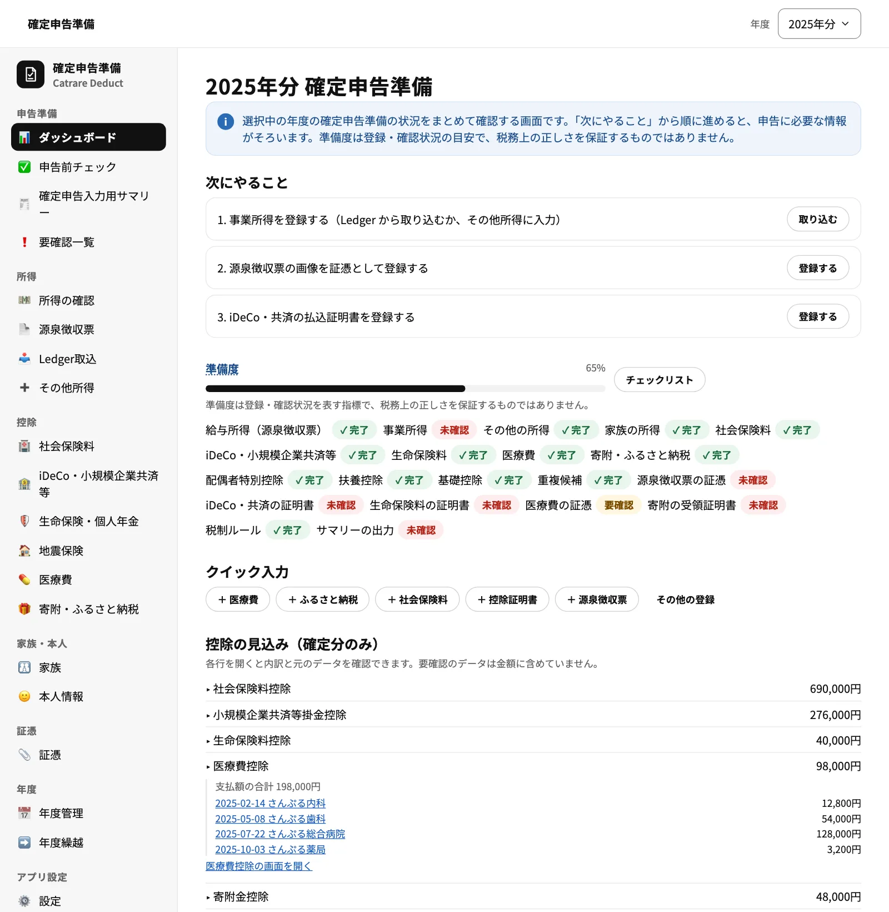
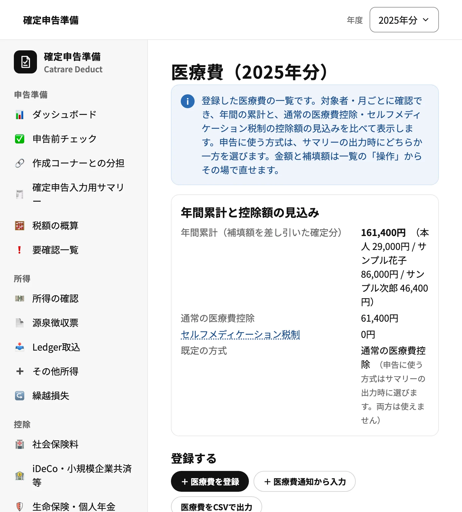
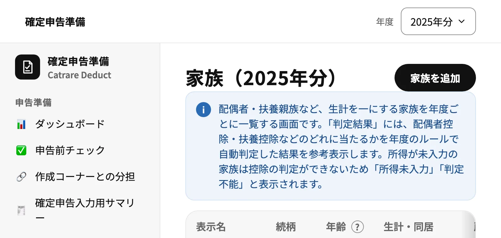
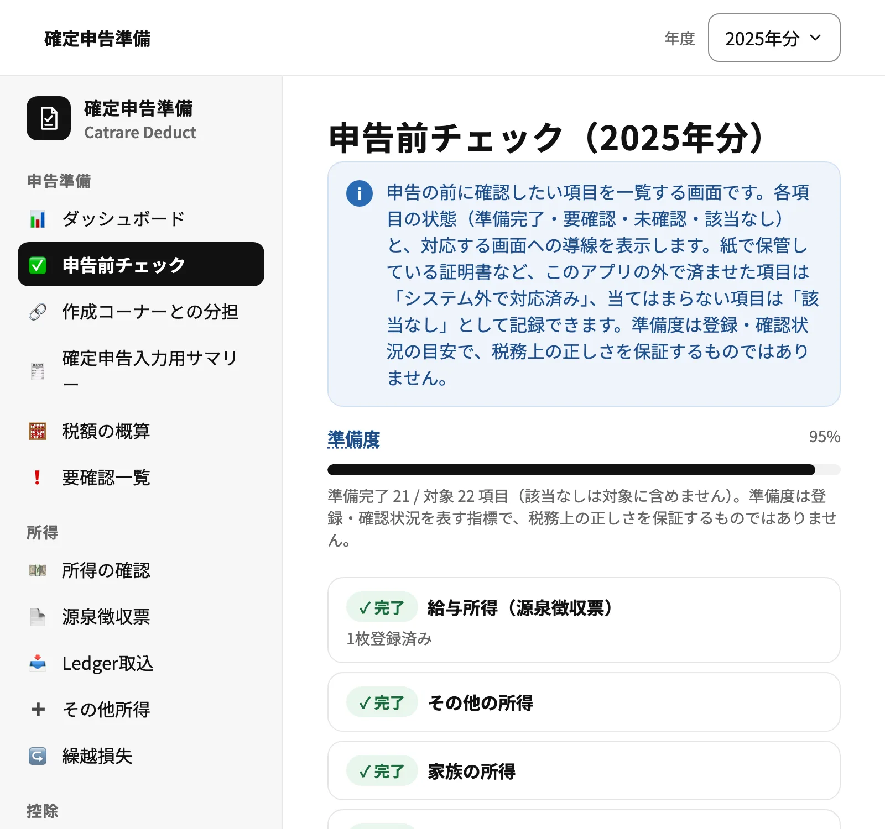
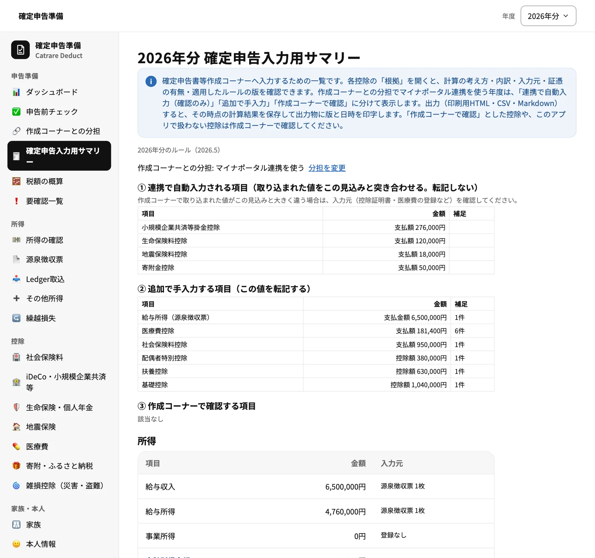
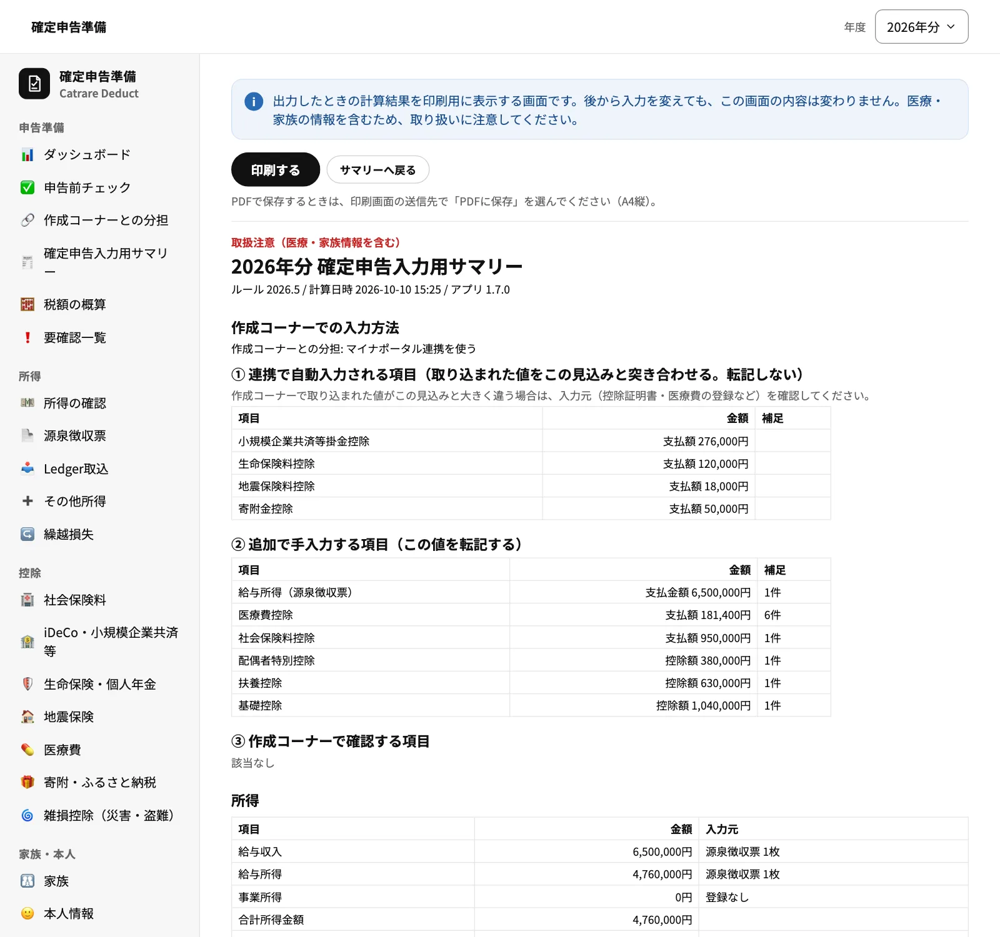

Web App
DEDUCT確定申告準備
確定申告の準備を、1年を通して少しずつ進めるためのブラウザアプリです。源泉徴収票・社会保険料・生命保険料・医療費・ふるさと納税・家族の情報を登録しておくと、控除の見込みと準備の進み具合が分かり、国税庁の確定申告書等作成コーナーへ入力するためのサマリーを作れます。データはお使いのブラウザ内だけに保存され、サーバーには送信されません。
- 無料
- インストール不要
- データは端末内のみ
- LEDGERと連携

Features
年間の記録から申告前の確認まで。
源泉徴収票と所得の整理
源泉徴収票を紙面の順に入力し、給与所得・合計所得金額・源泉徴収税額をまとめて確認できます。転職で複数枚あるときの二重計上の確認にも対応します。事業所得は LEDGER から取り込めます。
社会保険料・iDeCo・保険料
国民年金・国民健康保険・iDeCo・生命保険・地震保険などを、日常の言葉から選んで登録できます。源泉徴収票の社会保険料は自動で反映され、もう一度入力する必要はありません。
医療費・セルフメディケーション税制
医療費を少ない入力で1件ずつ登録し、年間の累計をその場で確認できます。通常の医療費控除とセルフメディケーション税制の見込みを並べて比べられます。補填額が決まっていないものは要確認として残せます。
寄附・ふるさと納税
寄附を登録して寄附金控除の見込みを確認できます。ワンストップ特例を申請した寄附があると、確定申告で特例が使えなくなることを注意として表示します。
家族と控除の判定
家族の生年月日・同居・所得を登録すると、配偶者控除・配偶者特別控除・扶養控除・特定親族特別控除のどれに当たるかを年度のルールで判定します。所得が未入力の家族は「判定不能」と表示し、必要な情報を案内します。
控除証明書などの証憑
控除証明書・領収書の画像やPDFを登録し、データに紐付けて保管できます。控除の種類ごとに書類の不足をチェックできます。
申告前チェックと準備度
申告前に確認したい項目を状態つきで一覧し、準備度として表示します。紙で保管している書類などは「システム外で対応済み」として記録できます。
確定申告入力用サマリー
作成コーナーへ入力しやすい区分で、所得と所得控除の金額を一覧します。各控除の根拠（計算の考え方・内訳・入力元）を確認でき、印刷用表示・CSV・Markdown で出力できます。
年度繰越・バックアップ
本人情報・家族・継続している契約を翌年度へ引き継げます。申告が終わった年度は申告済みにして編集を止められます。JSONバックアップ（暗号化にも対応）からの復元もできます。
Screens
実際の画面をご覧ください。
掲載している画面は、架空の「サンプル太郎」さんのダミーデータです（家族・医療機関・寄附先・金額はすべて架空のものです）。
医療費を登録して累計を確認
医療費は支払日・医療機関・金額を入れるだけで登録でき、月別・対象者別に一覧できます。年間の累計と、通常の医療費控除・セルフメディケーション税制の見込みも同じ画面で確認できます。
- 補填額が決まっていない医療費は要確認として保存し、後から確定できる
- 医療費の明細をCSVで出力

家族の控除を自動で判定
家族を登録すると、配偶者控除・扶養控除などのどれに当たるかを年度のルールで判定し、一覧に表示します。判定に必要な情報が足りない家族は「判定不能」として、控除額に含めません。
- 年齢は年度の12月31日時点で自動計算
- 国外に住む親族は判定せず、作成コーナーでの確認を案内

申告前チェックで残りの作業を確認
所得・控除・証憑・重複・ルール・サマリーの出力まで、申告前に確認したい項目を状態つきで一覧します。各項目から該当する画面へ移動でき、当てはまらない項目は「該当なし」にできます。
- 準備度は登録・確認状況の目安で、税務上の正しさを保証するものではありません

確定申告入力用サマリー
作成コーナーへ入力するための一覧です。所得と各控除の金額に加えて、「根拠」を開くと計算の考え方・内訳・入力元・証憑の有無・適用したルールの版を確認できます。医療費控除の方式もここで選びます。
- 障害者控除など、このアプリで計算しない控除は「作成コーナーで確認」と表示

出力したときの内容を保存して印刷
サマリーを出力すると、その時点の計算結果を保存し、ルールの版・計算日時・アプリの版を印字します。後から入力を変えても、印刷の内容は変わりません。ブラウザの印刷機能から「PDFとして保存」もできます。
- 出力後に入力を変えると、再出力をうながす表示が出る
- CSV・Markdown でも出力

Tech Stack
ブラウザだけで完結する構成です。
| 実行方式 | ブラウザで動く静的Webアプリ（サーバー処理なし）。GitHub Pages で配布 |
|---|---|
| フロントエンド | TypeScript ／ React 19 ／ Vite ／ React Router（HashRouter） |
| UI | Tailwind CSS v4 ／ shadcn/ui（Base UI）を土台にした共通UIパッケージ ／ Noto Sans JP（自己ホスト） |
| データ保存 | IndexedDB（Dexie.js）。すべてブラウザ内に保存し、サーバーへは送信しません |
| 状態管理・検証 | Zustand ／ Zod（入力・バックアップ・年度別ルールの検証） |
| テスト・品質 | Vitest（単体テスト）／ Playwright（E2E）／ Biome（Lint・Format） |
| 開発体制 | pnpm モノレポで LEDGER・WORKBILL と UI 部品を共有し、設計書を正としてテスト駆動で段階的に開発しています。 |
ローカルファースト
医療・家族・給与の情報も含めて、データはお使いのブラウザのIndexedDBにだけ保存し、ネットワークへは送信しません。マイナンバーの入力欄はありません。
税制の数値は年度別のルールに
控除額や所得の要件はコードに直接書かず、年度ごとのルールにまとめ、国税庁の資料で確認した出典と確認日を記録しています。年度が変わったときはルールの追加で対応します。
判断できないことは断定しない
家族の所得が未入力のときなど、判定に必要な情報が足りない場合は控除額を0とせず「判定不能」として示します。要確認のデータは控除額に含めず、別に表示します。
LEDGERとの疎結合
事業所得は帳簿アプリの LEDGER が出力したJSONファイルで受け取ります。データベースは別々で、ファイルでだけ受け渡します。
Notes
ご利用にあたって
本アプリは確定申告の準備を補助するツールで、税務上の正しさを保証するものではありません。申告は国税庁の確定申告書等作成コーナーで行い、控除の対象になるかどうかは証明書の記載や税務署などでご確認ください。障害者控除・寡婦控除・ひとり親控除・勤労学生控除・雑損控除など、このアプリで計算しない控除があります。
データはお使いのブラウザにだけ保存されます。ブラウザのデータ削除や端末の変更で失われることがあるため、定期的にバックアップを保存してください。
PCのブラウザでの利用を想定しています。
DEDUCT を使ってみる
登録・ログインは不要です。ブラウザで開くとすぐに使えます。初めて開いたときは空の状態です。
PCのブラウザでのご利用を想定しています。